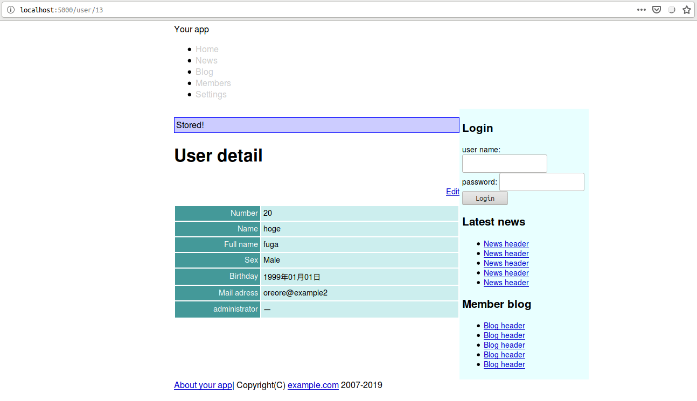
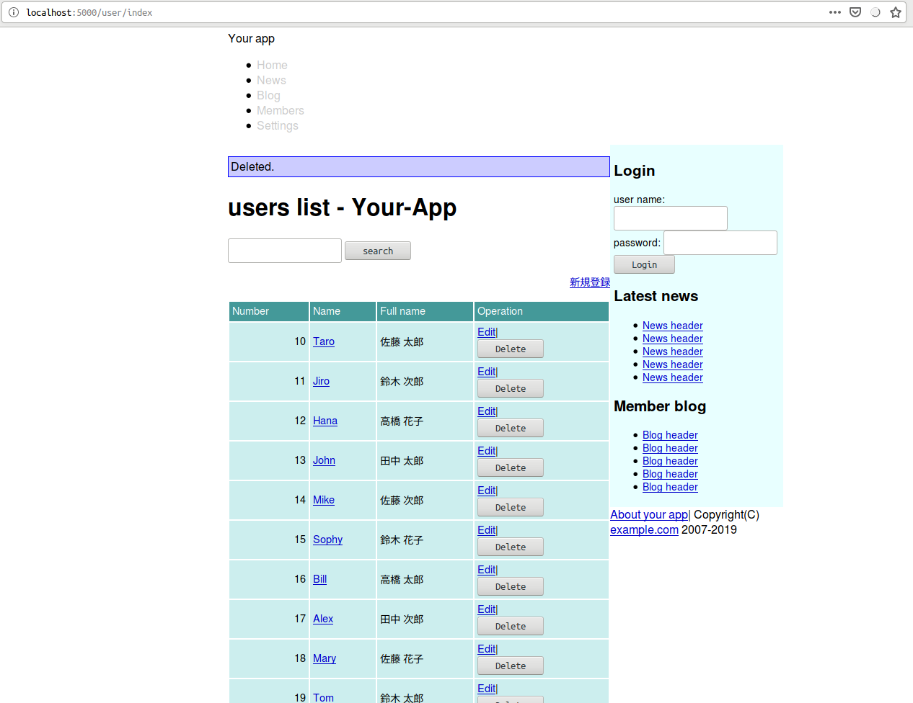

Caveman kills ruby on rails - Chapter 6
Meta info
対象読者
- CavemanでCSRF対策をしたいCLer
NOTE
筆者はcavemanを捨てsnoozeを使うようになった。 詳細はここに記してある。
Introduction
本稿は原著の各章をCommon Lispに翻訳するシリーズの第5章である。 本章ではnew、edit、destroyアクションを作成していきながらCavemanの作法を修めていく。
6.1 Forms and models
CSRF対策
Cavemanにそんな機能はない。 幸いCavemanは下層のlack-request経由でcookieをサポートしている。 セッショントークンを取り出すヘルパーは以下のようなコードになるだろう。
(defun token ()
(cdr (assoc "lack.session" (lack.request:request-cookies ningle:*request*)
:test #'string=)))あとはこれを利用して自前で作ればいい。 フォームを含むhtmlテンプレートのレンダリングには必ずトークンを引数として渡すようにする。
new and edit
Newのルーティングは以下の通り。
(defroute "/user/new"()
(render "user/new.html"
`(:user ,(make-instance 'your-app.model::user)
:token ,(token))))Editのルーティングは以下の通り。
(defroute "/user/:id/edit"(&key id)
(let*((id(ignore-errors(parse-integer id)))
(user(and id (mito:find-dao 'your-app.model::user :id id))))
(if user
(render "user/edit.html" `(:user ,user :token ,(token)))
(on-exception *web* 404))))Form template
Cavemanにはformをいい具合に作ってくれるメソッドなどない。 手でゴリゴリ書く。
共通する入力フォームを担うテンプレートは以下の通り。 これをtemplates/user/form.htmlとして作成する。
<table class="attr">
<tr>
<th><label for="user-number">Number</label></th>
<td><input size="8" type="text" name="number" value="{{user.number}}" id="user-number" /></td>
</tr>
<tr>
<th><label for="user-name">Name</label></th>
<td><input type="text" value="{{user.name}}" name="name" id="user-name" /></td>
</tr>
<tr>
<th><label for="user-full-name">Full Name</label></th>
<td><input type="text" value="{{user.full-name}}" name="full-name" id="user-full-name" /></td>
</tr>
<tr>
<th>Sex</th>
<td>
<input type="radio" value="1" {%ifequal user.sex 1%}checked="checked"{%endifequal%} name="sex" id="member-sex-1" />
<label for="member-sex-1">Male</label>
<input type="radio" value="2" {%ifequal user.sex 2%}checked="checked"{%endifequal%} name="sex" id="member-sex-2" />
<label for="member-sex-1">Female</label>
</td>
</tr>
<tr>
<th><label for="user-birthday">Birthday</label></th>
<td><select id="member-birthday-li" name="birthday-year">
{{ user.birthday
| lisp: (lambda(timestamp)
(let((current-year(local-time:timestamp-year(local-time:now))))
(loop :for i :upfrom 1940 :to current-year
:with target = (or (and timestamp
(local-time:timestamp-year timestamp))
(- current-year 20))
:collect (format nil "<option value=\"~D\"~@[ ~A~]>~2:*~D</option>~%"
i (when(= target i)
"selected=\"selected\"")))))
| join:""
| safe
}}
</select>
<select id="member-birthday-2i" name="birthday-month">
{{ user.birthday
| lisp: (lambda(timestamp)
(loop :for i :upfrom 1 to 12
:with target = (or (and timestamp
(local-time:timestamp-month timestamp))
1)
:collect (format nil "<option value=\"~D\"~@[ ~A~]>~A</option>~%"
i (when(= target i)
"selected=\"selected\"")
(aref local-time:+month-names+ i))))
| join:""
| safe
}}
</select>
<select id="birthday-3i" name="birthday-day">
{{ user.birthday
| lisp: (lambda(timestamp)
(loop :for i :upfrom 1 to 31
:with target = (or (and timestamp
(local-time:timestamp-day timestamp))
1)
:collect (format nil "<option value=\"~D\"~@[ ~A~]>~2:*~D</option>~%"
i (when(= target i)
"selected=\"selected\""))))
| join:""
| safe
}}
</select>
</td>
</tr>
<tr>
<th><label for="user-email">Email</label></th>
<td><input type="text" name="email" id="user-email" /></td>
</tr>
<tr>
<th>Administrator</th>
<td>
<input name="administrator" type="hidden" value="0" />
<input type="checkbox" value="1" name="administrator" id="user-administrator" />
<label for="user-administrator">Administrator</label>
</td>
</tr>
</table>View of NEW.
New用のテンプレートは以下の通り。
{% extends "layouts/app.html" %}
{% block title %}
{% lisp (title! "New member") %}
{% endblock %}
{% block content %}
<h1>{% lisp (title!) %}</h1>
<form class="new-user" id="new-user" action="/user" method="post">
<input name="authenticity-token" type="hidden" value="{{token}}" />
{% include "user/form.html" %}
<div>
<input type="submit" name="commit" value="create user" />
</div>
</form>
{% endblock %}View of EDIT.
Edit用のテンプレートは以下の通り。
{% extends "layouts/app.html" %}
{% block title %}
{% lisp (title! "Edit user") %}
{% endblock %}
{% block content %}
<h1>{% lisp (title!) %}</h1>
<div class="toolbar">
<a href="/user/{{user.id}}">Back to user detail</a>
</div>
<form class="edit-user" id="edit-user" action="/user/{{user.id}}" method="post">
<input name="_method" type="hidden" value="patch" />
<input name="authenticity-token" type="hidden" value="{{token}}" />
{% include "user/form.html" %}
<div>
<input type="submit" name="commit" value="edit user" />
</div>
</form>
{% endblock %}6.2 Create, Update, Destroy
Create
Createのためのルーティングは以下の通り。
引数のvalidationはTODOである。
引数|number|と|sex|、|administrator|が空文字列で初期化されているのはコンパイラ（sbcl）がクレームをつけるから。
というのも各引数が渡されるべきCL:PARSE-INTEGERの第一引数はNILを許さないから。
(defroute("/user" :method :post)(&key |authenticity-token| (|number| "") |name| |full-name| (|sex| "") |birthday-year|
|birthday-month| |birthday-day| |email| (|administrator| ""))
(if(not(string= |authenticity-token| (token)))
'(403 () ("Denied"))
(let((user(mito:create-dao 'your-app.model::user
:number (parse-integer |number| :junk-allowed t)
:name |name|
:full-name |full-name|
:sex (parse-integer |sex| :junk-allowed t)
:birthday (local-time:parse-timestring (format nil "~A-~A-~A" |birthday-year| |birthday-month| |birthday-day|))
:email |email|
:administrator (eq your-app.model::+true+ (zerop (parse-integer |administrator| :junk-allowed t))))))
(setf(gethash :notice ningle:*session*)"Stored!")
`(303 (:location ,(format nil "/user/~D"(mito:object-id user)))))))templates/layouts/app.htmlの該当部分を以下のように編集。
<main>
{% if notice %}
<p class="notice">{{notice}}</p>
{% endif %}flashの取り出しは頻出すると思うのでヘルパーにまとめよう。
(defun flash-gethash(key table)
(let((value(gethash key table)))
(remhash key table)
value))Showへのルーティングに:NOTICE引数を渡すように編集する。
(defroute "/user/:id"(&key id)
(let((id(ignore-errors(parse-integer id))))
(if(null id)
(myway.mapper:next-route)
(let((user(mito:find-dao 'your-app.model::user :id id)))
(if user
(render "user/show.html" `(:user ,user :notice ,(flash-gethash :notice ningle:*session*)))
(on-exception *web* 404))))))CSSに以下を追加。
/* flash */
p.notice {
border: 1px solid blue;
padding: 3px;
background-color: #ccf;
}
Update
Updateのためのルーティングは以下の通り。
(defroute("/user/:id" :method :post)(&key |authenticity-token| id (|number| "") |name| |full-name| (|sex| "")
|birthday-year| |birthday-month| |birthday-day| |email| (|administrator| ""))
(if(not(string= |authenticity-token| (token)))
'(403 () ("Denied"))
(let((id(ignore-errors(parse-integer id)))
(user(and id (mito:find-dao 'your-app.model::user :id id))))
(if(null user)
'(500 () ("Could not edit unexists user.")))
(progn (setf (your-app.model::number-of user) (parse-integer |number| :junk-allowed t)
(your-app.model::name-of user) |name|
(your-app.model::full-name-of user) |full-name|
(your-app.model::sex-of user) (parse-integer |sex| :junk-allowed t)
(your-app.model::birthday-of user) (local-time:parse-timestring (format nil "~A-~A-~A" |birthday-year| |birthday-month| |birthday-day|))
(your-app.model::email-of user) |email|
(your-app.model::administrator-of user) (eq your-app.model::+true+ (zerop (parse-integer |administrator| :junk-allowed t))))
(mito:save-dao user)
(setf(gethash :notice ningle:*session*)"Updated")
`(303 (:location ,(format nil "/user/~D" id)))))))Destroy
さて、デリートのためのルーティングだが、CavemanはマイクロフレームワークなためJS周りのサポートは皆無である。 原著の例ではdeleteをクリックするとポップアップでの確認が出るが、ここでは作らずにすます。 また、postメソッドで送るため、タグをフォームに変更する。
templates/user/index.htmlの該当する部分を以下のように編集する。
<tbody>
{% for user in users %}
<tr>
<td style="text-align: right">{{user.number}}</td>
<td>
<a href="/user/{{user.id}}">{{user.name}}</a>
</td>
<td>{{user.full-name}}</td>
<td>
<a href="/user/{{user.id}}/edit">Edit</a>|
<form action="/user/{{user.id}}" method="post">
<input type="hidden" name="_method" value="delete">
<input type="hidden" name="authenticity-token" value="{{token}}">
<input type="submit" value="Delete">
</form>
</td>
</tr>
{% endfor %}
</tbody>上記テンプレートに引数を渡すようにuser/indexのルーティングを以下のように編集する。
(defroute index "/user/index"()
(render "user/index.html" `(:users ,(mito:select-dao 'your-app.model::user
(sxql:order-by :number))
:token ,(token)
:notice ,(flash-gethash :notice ningle:*session*))))まずはDELETEメソッドのためのルーティングを作成しよう。 これまでと違い名前付きにしている点要注意。
(defroute delete-user("/user/:id" :method :delete)(&key |authenticity-token| id)
(if(not(string= |authenticity-token| (token)))
`(403 (:content-type "text/plain")("Denied"))
(let*((id(ignore-errors(parse-integer id)))
(user(and id (mito:find-dao 'your-app.model::user :id id))))
(if(null user)
`(500 (:content-type "text/plain") (,(format nil "~%Could not delete unexists user. id ~S" id)))
(progn (mito:delete-dao user)
(setf(gethash :notice ningle:*session*)"Deleted.")
`(303 (:location "/user/index")))))))これでDELETEのためのAPIはできたが、ブラウザはGETとPOSTしかサポートしていない。 よってPOSTにはディスパッチを担ってもらう。
(defroute("/user/:id" :method :post)(&key |authenticity-token| id (|number| "") |name| |full-name| (|sex| "")
|birthday-year| |birthday-month| |birthday-day| |email| (|administrator| "")
|_method|)
(if(not(string= |authenticity-token| (token)))
'(403 () ("Denied"))
(cond
((string= |_method| "delete")
(delete-user (acons "ID" id (lack.request:request-body-parameters ningle:*request*))))
((find |_method| '("" "post"))
(let((id(ignore-errors(parse-integer id)))
(user(and id (mito:find-dao 'your-app.model::user :id id))))
(if(null user)
'(500 (:content-type "text/plain")("Could not edit unexists user."))
(progn (setf (your-app.model::number-of user) (parse-integer |number| :junk-allowed t)
(your-app.model::name-of user) |name|
(your-app.model::full-name-of user) |full-name|
(your-app.model::sex-of user) (parse-integer |sex| :junk-allowed t)
(your-app.model::birthday-of user) (local-time:parse-timestring (format nil "~A-~A-~A" |birthday-year| |birthday-month| |birthday-day|))
(your-app.model::email-of user) |email|
(your-app.model::administrator-of user) (eq your-app.model::+true+ (zerop (parse-integer |administrator| :junk-allowed t))))
(mito:save-dao user)
(setf(gethash :notice ningle:*session*)"Updated")
`(303 (:location ,(format nil "/user/~D" id)))))))
(t `(400 (:content-type "text/plain") (,(format nil "Unsuppoeted method ~S" |_method|)))))))先程名前をつけたDELETE-USERルーティングを明示的に呼び出している点要注意。
これにあたりNINGLE:*REQUEST*からLACK.REQUEST:REQUEST-BODY-PARAMETERSでパラメタを含むALISTを取り出しCL:ACONSで拡張している点要注目。
これがないとIDがDELETE-USERに渡らない。

Summary
- 7つのアクションに相当するルーティングは自前でゴリゴリ書きます。
- ブラウザはGETとPOSTしかサポートしていないのでPOSTにディスパッチを担当させます。